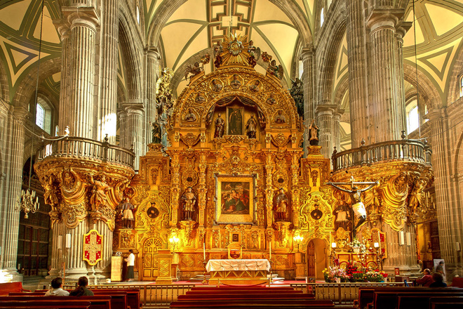
The Catedral Metropolitana took nearly 300 years to build. Started in 1573 as a seven-nave cathedral (based on Seville's) it soon ran into difficulty with the spongy sub-soil, as Mexico City is built over a lake, and was scaled down by two naves. It features the elaborately carved and guilded Altar de Perdón and the Señor del Venero (Lord of the Poison), where a dusky Christ figure allegedly obtained his colour when he miraculously absorbed a dose of poison through his feet from the lips of a clergyman to whom an enemy had administered the lethal substance.
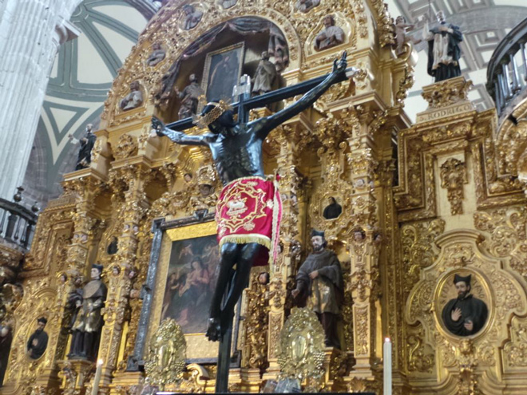
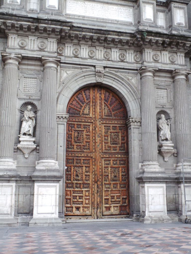
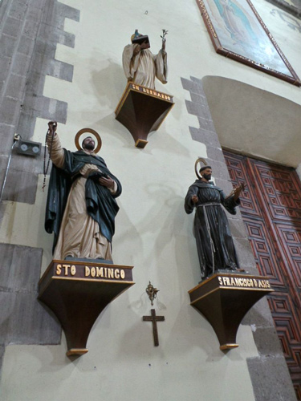
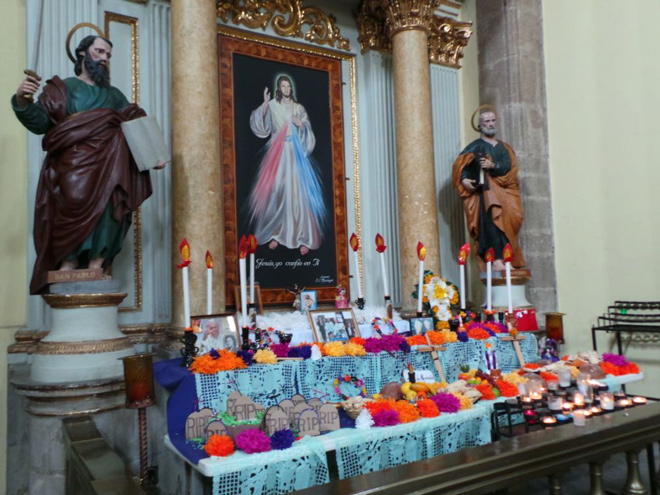
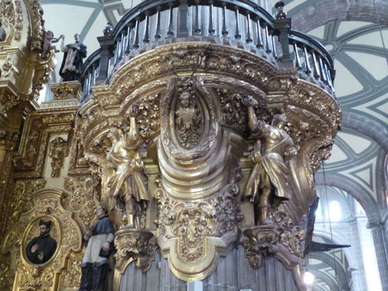
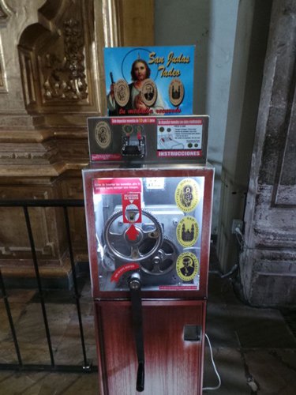
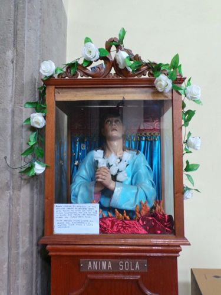
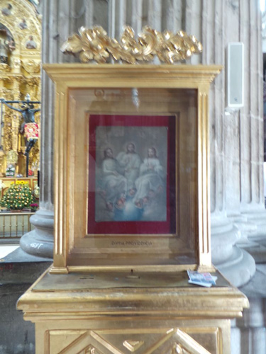
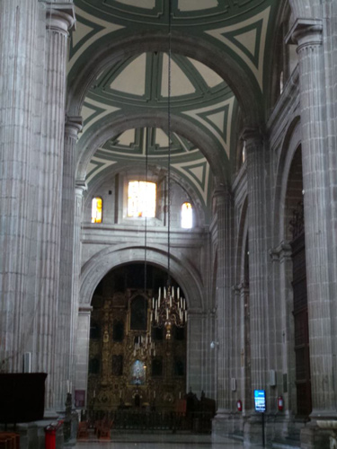
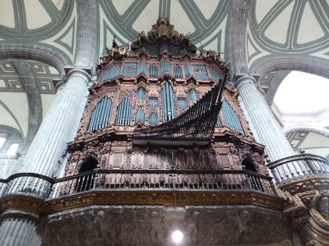
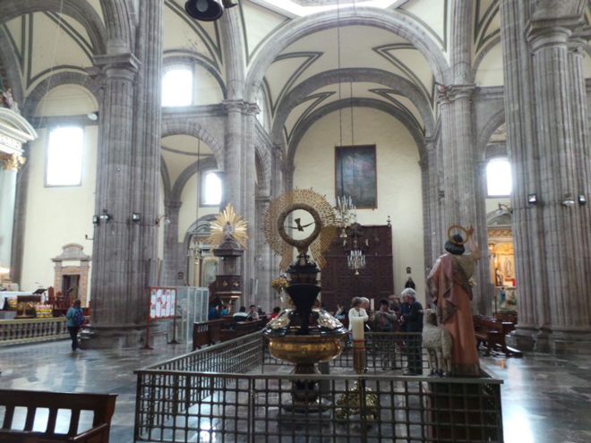
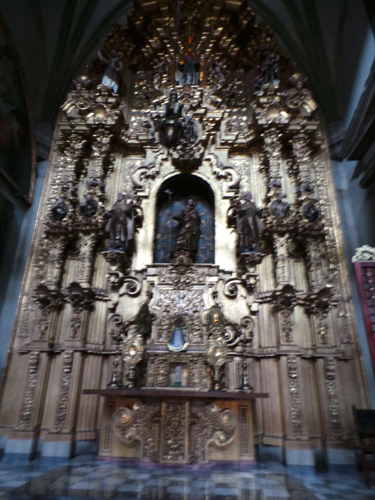
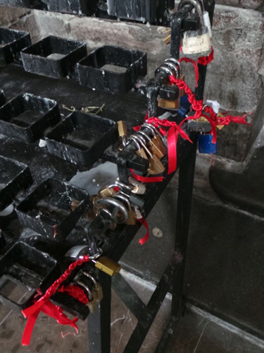
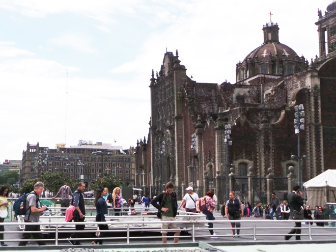
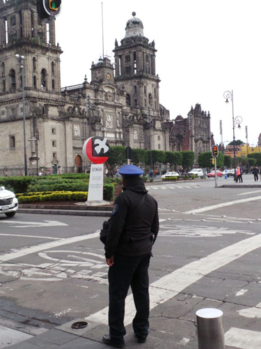
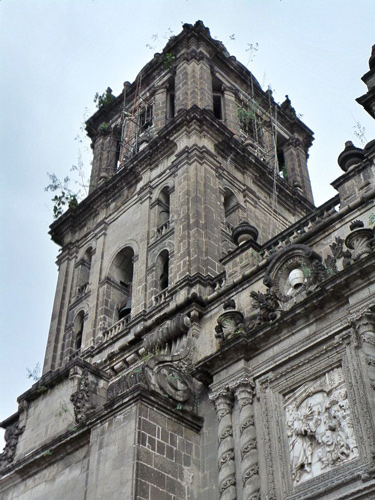
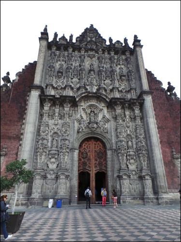
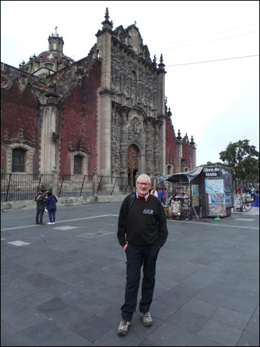
There was a heavy security presence around the Cathedral - not least as it was adjacent to the Presidential Palace which was being picketed by protestors. This guy didn't look as if he would take any nonsense from anyone ...
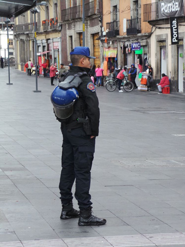
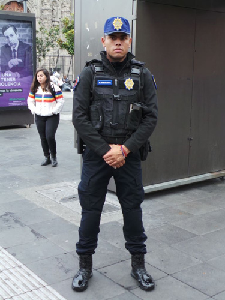